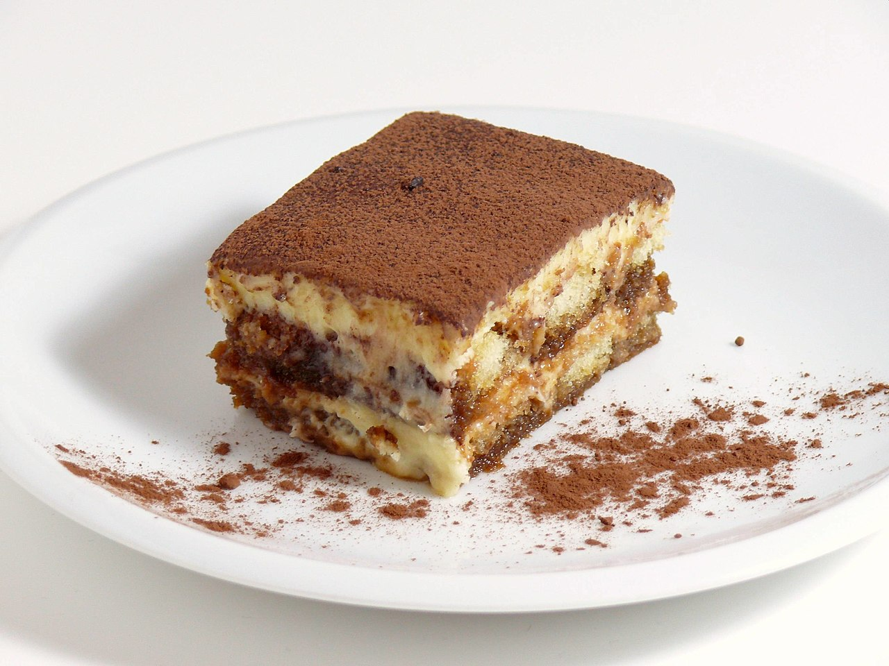

Tiramisu

Description
Tiramisu is a coffee-flavored dessert that features layers of homemade whipped
cream, an egg yolk-enriched mascarpone filling, and coffee-soaked ladyfingers.
- Egg Yolks
- Sugar
- Milk
- Cream
- Vanilla
- Mascarpone
- Coffee
- Rum
- Ladyfingers
- Cocoa Powder
Steps
- Cook the egg yolks, sugar, and milk until slightly thickened. Let cool slightly, then chill in the fridge for about an hour. When the filling has fully chilled, mix in mascarpone cheese.
- Beat heavy cream with vanilla extract until stiff peaks form.
- Combine coffee and rum in a small bowl. Pour mixture over ladyfingers that have been split in half lengthwise.
- Line the bottom of a baking dish with soaked ladyfingers. Spread half of the mascarpone mixture over the ladyfingers, then half of the whipped cream over that. Repeat in the same order. Dust with cocoa powder.